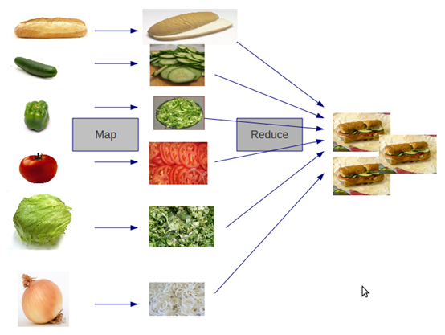
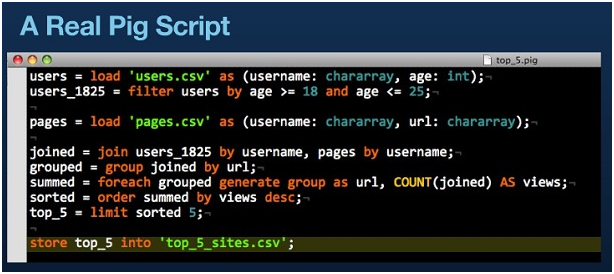
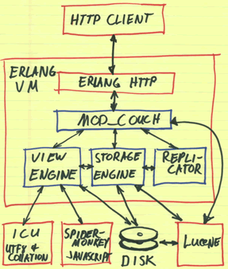

Représentation Document : pas de SQL, Comment rechercher ?
« type » : « type_dobjet »
duck typing :
« si cela ressemble à un canard, nage comme un canard, cancane comme un canard, alors c’est probablement un canard » (James W. Riley)
Avantages
Fusion des modèles programmation / distribution
Optimisation du stockage en fonction du modèle de programmation / de l’utilisation de la base
Downside
Si l’agrégat n’est pas conforme à l’accès aux données, l’analyse devient très difficile
Map-reduce

Utilisation de vue matérialisées
Optimisés pour les clusters
Jobs map-reduce permettent de regrouper les données en fonction de différents usages
Retours d'expériences - CERN
Détecteur de particules (3600 personnes / 183 instituts scientifiques / 38 pays)
10 Po / an
CouchDB pour les flux entrants / réplication entre sites / mappé sur des bases oracle
PROS : courbe d’apprentissage rapide
CONS : difficulté de désapprentissage du SQL
Retours d'expériences - NetFlix
TV en ligne (US)
SimpleDB, HBase and Cassandra
SimpleDB : car AWS / réplication auto inter-région
Fonctionnalité liées aux query : key/multi-attributs, batchs, lecture consistente
CONS : Courbe d’apprentissage / refonte architecturale complexe
PROS : Couverture de ces 2 faiblesses grâce à performance, scalabilité et disponibilité
Retours d'expériences - Twitter
4 Po an / 12 To par jours
80 catégories de données loggés dans HADOOP pour analyse
utilisation de Hadoop qui analyse et alimente des graphs dans FlockDB
Utilisation de Pig à la place de JAVA : recherche des 5 pages les plus visitées par les 18/25 ans

“I'm confident to say that if you starting a new strategic enterprise application you
should no longer be assuming that your persistence should be relational.”
- Martin Fowler, Inventeur du modèle MVC
Démo CouchDB

...
Next step ...
Quel client, quelle situation serait favorable ?
DAT, Procédure d’exploitation et supervision de bases NoSQL ?
Des candidats pour monter une offre NoSQL CGI ?
Next step ...
Formation personnelle : GIYF !
POC BD données de référence, caches mémoires, applications internes CGI....